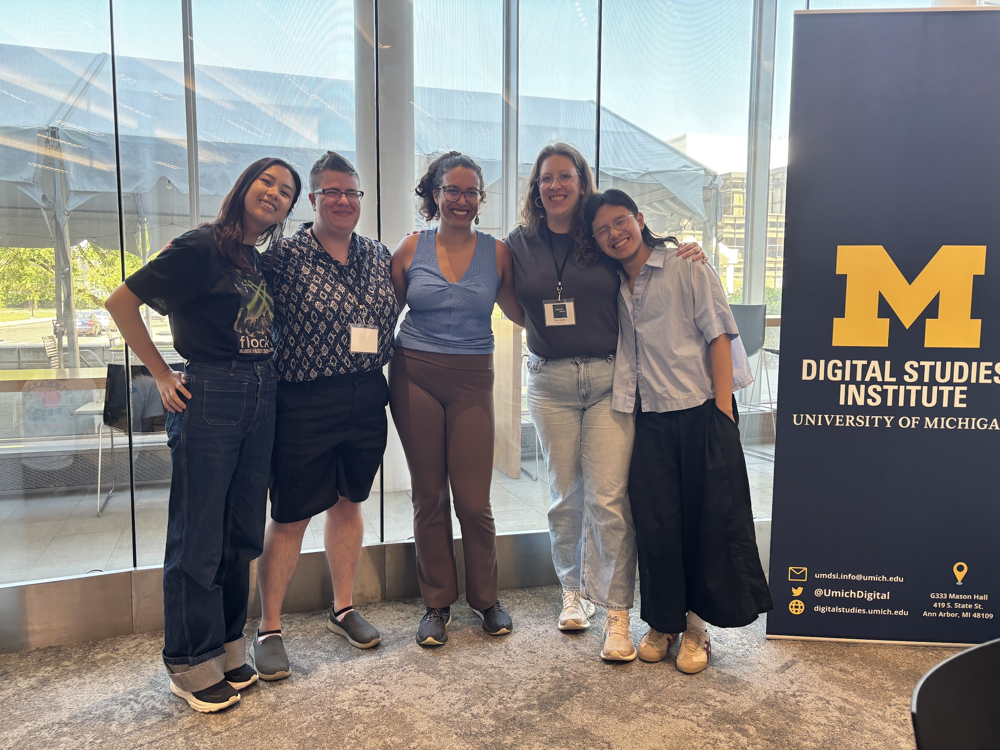
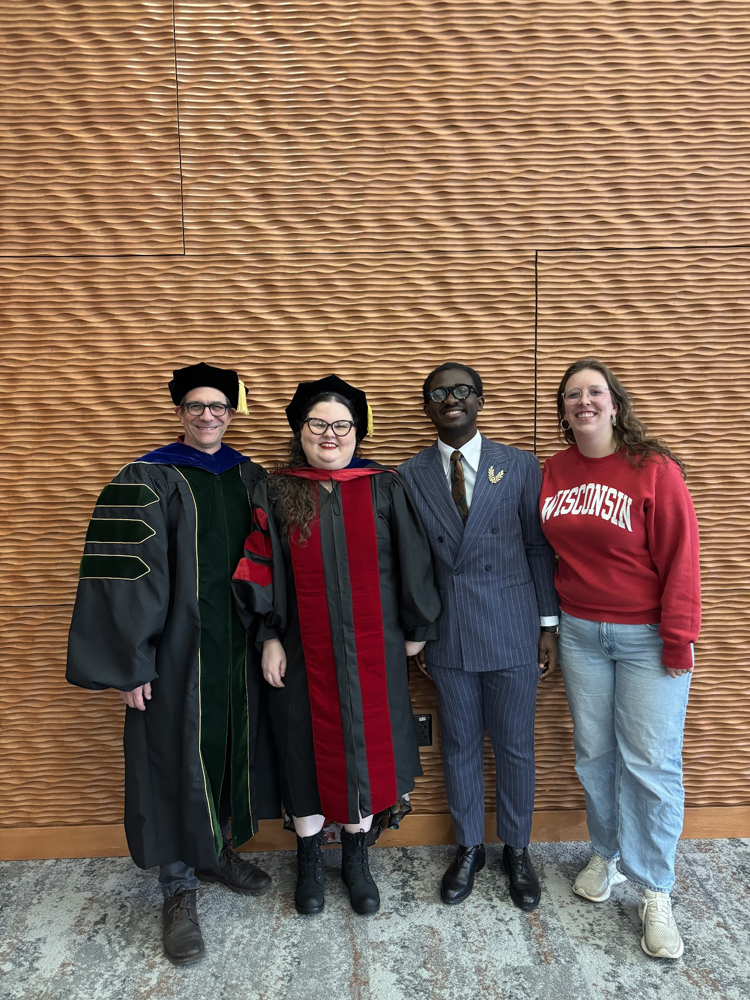
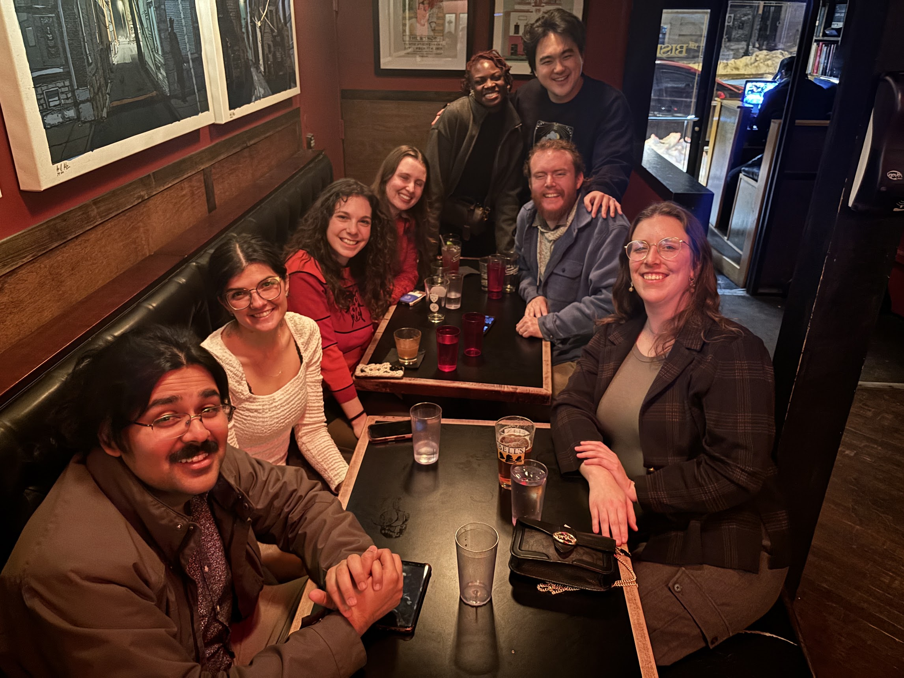
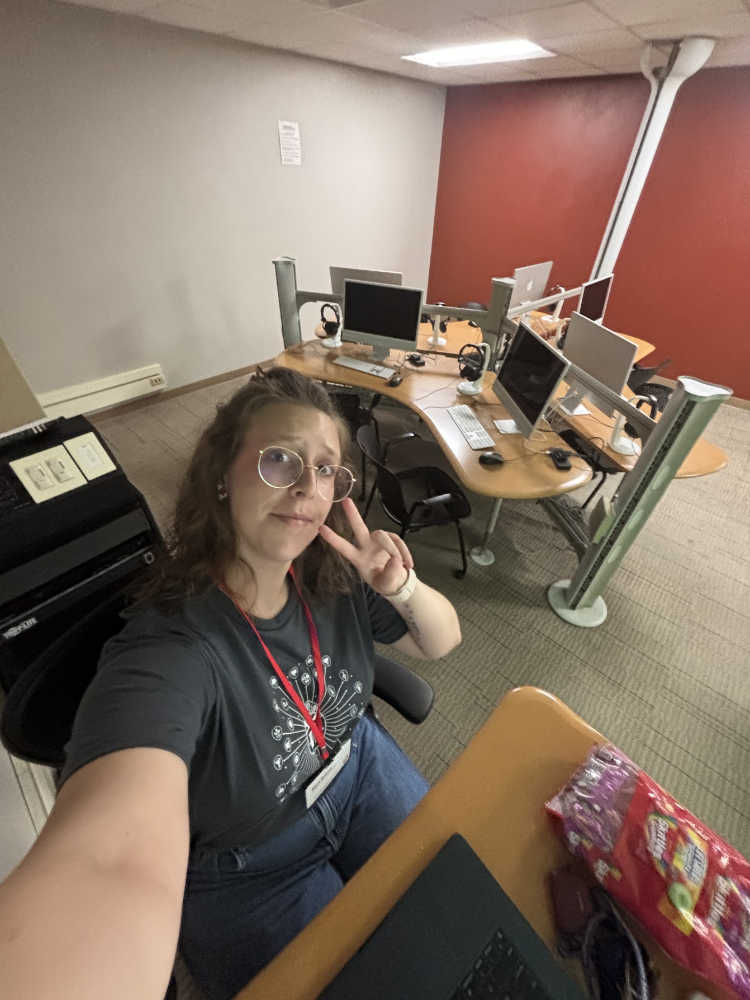
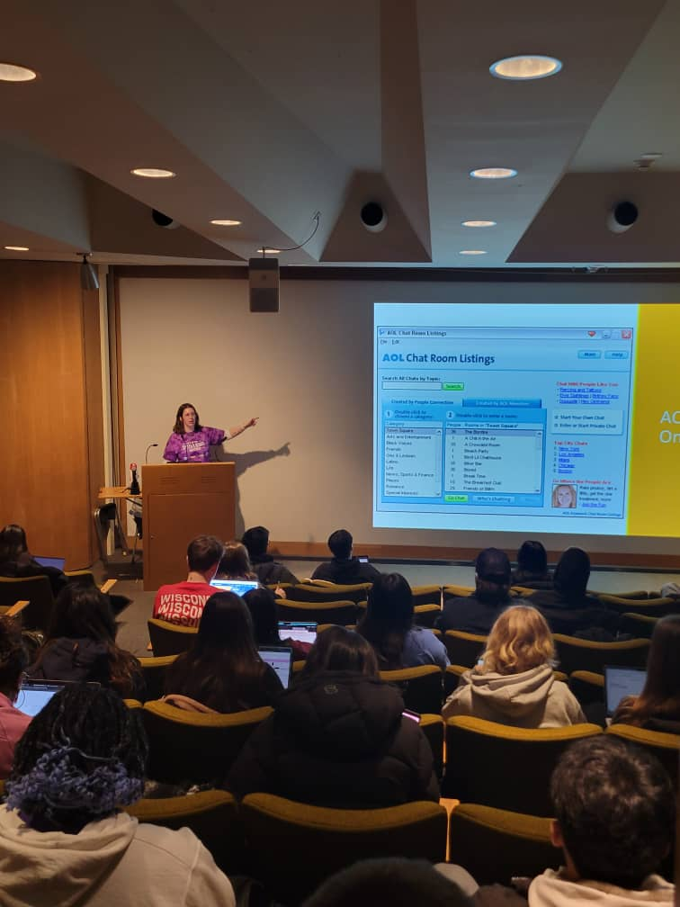

Teaching
My teaching experience is split between two large topics: digital studies and argumentation. I teach students about the complexities of digital technologies through a social science and humanities lens, helping students both produce digital work and recognize the layers of social influence that shape how the digital functions. Alternatively, I teach students the fundamentals of public argumentation: how to construct a sound argument, how to persuade through deliberation, and how to listen in disagreement. I have taught middle school, high school, and college-level students.
Education
MA in Communication Arts: Rhetoric, Politics, and Culture. University of Wisconsin, Madison. 2026
BS in Computer Science, Communication Arts: Communication science and Rhetorical Studies. University of Wisconsin, Madison. 2020
Workshops
The Discussion Project, UW-Madison, Summer 2026
Digital IDEAS Summer Institute, University of Michigan, Summer 2026
Midwest Winter Workshop, Indiana University Bloomington, Spring 2026
Teaching Experience (UW-Madison)
Primary Instructor
Communication Arts 100: Introduction to Speech Composition
Teaching Assistant
Communication Arts 200: Introduction to Digital Communication
Communication Arts 262: Theory and Practice of Argumentation and Debate
Library and Information Sciences 500: Code & Power, Intersectionality and the Internet
Grading
Communication Arts 371: Communication and Conflict
Communication Arts 343: Communication in the Age of AI
Guest Lectures
“Algorithms and Artificial Intelligence.” Communication Arts 200: Introduction to Digital Communication. 2026
“The History of the Internet.” Communication Arts 200: Introduction to Digital Communication. 2025
Other Teaching
Speech and Debate Coaching. 2023 to current day.
Educational Staff Supervisor. Badger Precollege Middle School Summer Program. Summer 2026.
Lead Instructor, Digital Storytelling Major, UW Grandparents University. July 2025.




